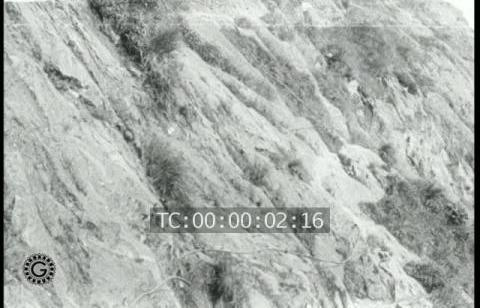
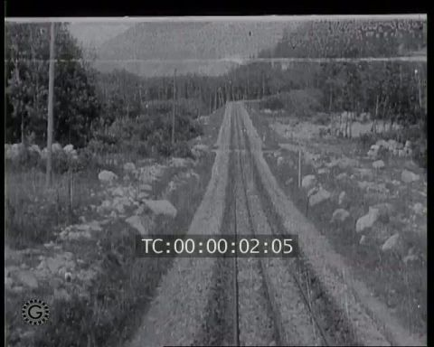
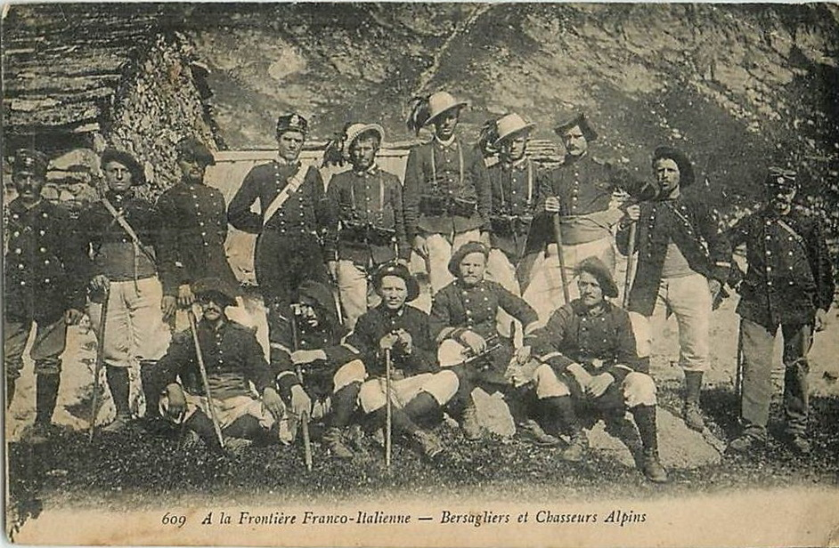

The mountain film
Chamonix in the Haute Savoie had long been a favourite of the European film companies. Antoine Lumière owned a grandiose villa in nearby Évian, which had no doubt encouraged the Lumière operators to film there (1897-1899). Léon Gaumont took a keen personal interest in mountaineering and had personally directed the ambitious, and important (but alas, lost) series of films, Ascension de Mont Blanc filmed there

|
|---|
Other mountains were of course climbed and filmed (in Europe notably the Jungfrau and the Matterhorn) but Chamonix-Mont Blanc, apart from being on the of the most successful resorts for the ver increasingly popular winter sports and the home of ski-ing (the second concours international de ski had taken place there
|  |
|---|
1910 did not produce anything as spectacular as the film series of 1901, 1902 and 1907 but Gaumont filmed two of the major attractions, La Mer de Glace and Le Mauvais Pas, at Chamonix in the year. Another Gaumont film, Drifts of Snow in Chamonix Valley or Drifts of Snow in Chamonix Vale (French title unknown) was shown in the US in August and was twice noticed by Moving Picture World, the second review being especially commendatory as well as bearing witness to the importance given to "the snow picture" as an exemplar of photographic and ciematographic style:
High mountains, deep valleys, dense forests, open fields, all covered with so deep a spread of white as would sound ridiculous in a story. In the streets of the village your audience will see snow which reaches to the cornices of the buildings.
A beautiful reproduction of snow drifts which really represent snow. The operator performed his part and was followed by the others in turn who produced a film that presents snow with such fidelity to nature that one can appreciate what it means. Often these snow pictures are mere masses of white and black, with none of the delicate shadows and half tones which make pictures of snow so beautiful. In this instance all objections of that character are overcome and the picture shows the huge drifts, shot with all the delicate tones and shadows which make snow beautiful. The picture is worthy of commendation from every standpoint. (27 August 1910).
At some time between 1909 and 1914, when the line was closed on account of the war, Gaumont also filmed a ghost ride on the new rack railway from Chamonix to Montenvers, possibly at the time of, or shortly after, its inauguration on 29 May 1909.
|  |
|---|
The line ran from Chamonix, to the Hotel de Montenvers station, at the Mer de Glace, at an altitude of 1,913m and wasa huge succes, carrying 47,480 passengers in the first six months alone.

|
|---|
President of the Republic Armand de Fallières was in Chamonix to open the new mairie on 7 September 1910 and apparently made the jounrney to Montenvers in great pomp. This Pathé footage is archived as dating from 1912 but it seems probable that it was in fact shot on this occasion in 1910.
Éclair, the pushiest of the relative newcomers among the French companies, made several mountain films in 1910 although sadly none are known to survive. The two four-minute Alpine views A Trip to Berne (filmed in the Swiss Alps) and Ascending the Sea of Ice, filmed at Chamonix (French titles are not known), both appeared early in the year (they were shown in the US in March). They also filmed Les Grimpeurs des rochers in the Pyrenées.
While filming in the Alps, they also made a six-minute documentary, Vie des Chasseurs Alpins aux postes frontières which was part of an occasional series of "exposés" of the lesser known activities of the French army that had been begun
|  |
|---|
Winter Sports
Chamonix was as famed for its winter sports as for its mountains and Gaumont was also filming these in 1910. Thse scenes of ski-ing were certainly filmed there at about this time.
These scenes, too, of ski-ing and bobsleighing, although the place is not specified, may also have been shot there. In the bobsleighing, The competitors departed from the piste after the first turn and one was injured.
Pathé, more enterprisingly, filmed the four-minute Concours de luge et de bobsleigh à Moscou. Ski-ing competitions had begun in Moscow in 1896 but the first all-Russia ski-ing competition took place in 1910. This sled and boblseigh race was apparently held at a venue called the Cakolnique Club. Gaumont would also get to film the winter sports in Moscow
Winter films are, in the absence of precise information, very tricky to date; one can never be entirely sure which year one is dealing with. Does a winter film of 1910 related to the winter of 1909/1910 or the winter of 1910/1911? Lucerne in Switzerland was another important resort. A film Sports d'hiver en Suisse is recorded for Pathé in 1912 but a Pathé film entitled Winter Sports at Lucerne appeared in the US on 11 June 1911 and may perhaps be the same film, in which case the film was presumably made during the winter of 1910/1911, although there may of course be wto separate films. No description seems to exist for the film shown in the US but the relatively long (nine-minute) film from the Pathé catalogue is described as follows and certainly sounds like Lucerne:
C’est au milieu d’un admirable panorama de montagnes de neige et de lacs gelés que nous voyons se dérouler ces sports d’hiver. Voici les courses de skeletons, sortes de petits traîneaux que l’on monte à plat ventre ; les courses de bobsleighs ; les champions du patinage et du curling ; puis le skikjoring, course de chevaux conduits par des « skieurs » et enfin les vertigineux sauts en skis, l’un des plaisirs favoris des amateurs de sports d’hiver, mais aussi l’un des plus difficiles et qui se termine bien souvent par une chute sévère.
In the midst of an admirable view of snow-covered mountains and frozen lakes, we witness the winter sports, consisting of races of skeletons, small sledges upon which one travels on one's stomach; bobsleigh races; champions of skating and curling; then "skikjoring", a horse-race driven by the "skiers" and finally the vertiginous ski-jumping, one of the favourite pleasurs of the lovers of winter sports, but also one of the most difficult and which often finishes with a severe fall.
Lucerne. Suisse: Glissades en toboggan (Pathé, c. 1911? 1920-22?)
Clearly the ambience at Lucerne, like that at St. Moritz (the winter playground of the English) was clearly more oriented towards rumbustious fun than it was towards sporting competition. This item, which appeared on a film made for the Pathé-Baby may have been part of the 1911 film or may have been filmed at about this time. It was certainly not filmedin 1905 when Pathé did indeed film toboganning in Switzerland but in St. Moritz, not at Lucerne.Given the emphasis on "close-up", however, it more probably dtes from 1920-22 when Pathé, with newly develepd equipment, was experimenting very determinedly with close-up, slow motion and accelerated film.
Le long de la pente rapide, les hiverneurs glissent à une vertigineuse allure, sur la neige durcie que racle l'éperon de fer du toboggan. Dans le cadre grandiose, le spectacle est palpitant, car les sportsmen sont parfois violemment projetés... dans les decors !
Along the rapid chute, the winter vistors slide at a vertiginous speed on the hardened snow scraped by the iron spur of the toboggan. In this close-up view, the spectacle is thrilling, for the sportsmen are sometimes violently flung....into the surrounding scenery.